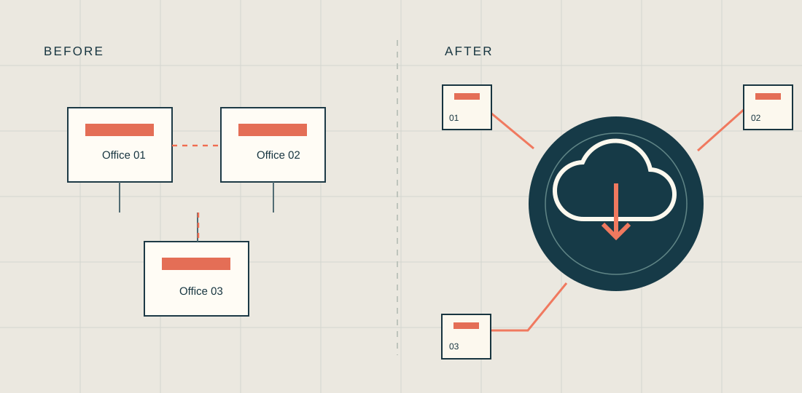

Better systems.
Better momentum.
Good infrastructure rarely calls attention to itself. The difference shows up in how smoothly a firm can work.
Client transformation
We move firms off aging servers and remote-desktop setups to cloud services, so project files are easy to reach from any office or laptop and there is less hardware to maintain.
- Migration to cloud services
- File server migration
- Server consolidation and retirement
- Laptop-first, work-anywhere setups
AI consulting & implementation
We help firms work out where AI is genuinely useful, then put it in place with the right data access, controls and training so teams can use it with confidence.
- AI readiness and strategy
- Tool selection and rollout
- Data access and governance
- Staff training and adoption
Support & security
Day-to-day help for every person in the firm, backed by engineers for the harder network problems and guidance on keeping project data secure.
- Front line support
- Advanced network support
- Security consulting
A simpler way to
work anywhere.
120 people. Three offices. One cloud-first environment.
A design firm using virtual desktops and offsite project files was ready for a change. Flying Buttress moved the organization toward a cloud-first setup, trading complexity for easier access, stronger protection and a better everyday experience.
The result: a laptop-first way of working with significant security improvements and lower cost than the prior environment. This case was described publicly in a 2026 interview with aec+tech.

Case study details are drawn from Flying Buttress founder Michael Donahue's 2026 interview with aec+tech. The client is not named.
The transformation
wasn't just technical.
Understand the work
Assess the friction in a VDI and offsite-file environment for a design practice spread across three offices.
Redesign the model
Shift toward cloud-first access and one laptop per user, creating a simpler and more flexible daily workflow.
Build for resilience
Improve security while keeping project files and the people who use them moving.
Change the economics
Reduce costs relative to the previous setup while retaining a practical working environment.